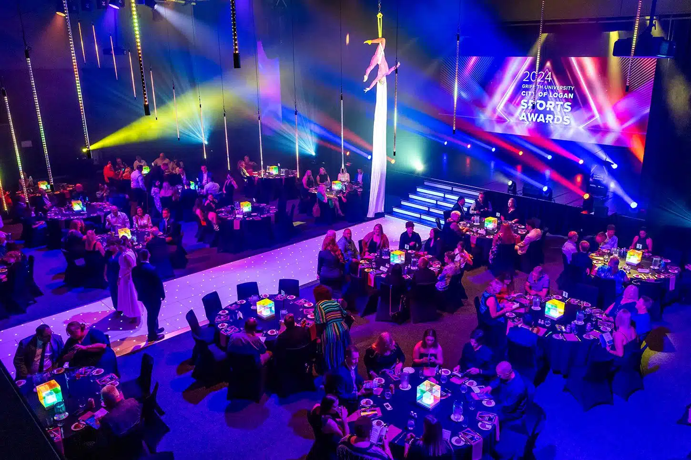

HIGH END AUDIO RENTAL · AMSTERDAM
Hoogwaardige AV,
binnen bereik.
Festivalwaardige techniek en expertise, slim toegepast op events van 200 tot 1.500 gasten. Juist in een middelgrote setting maakt de juiste afstemming hoorbaar verschil.
Lees het verhaal achter HEAR ↗
ONTDEK HEAR